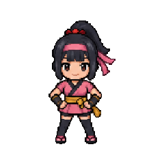
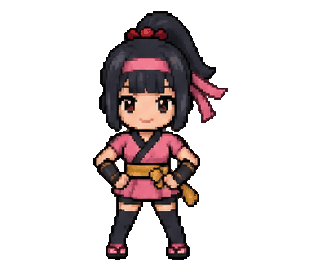

EARTHKEY / CRYPTONINJA
好きな仲間を、
いつもの会話に。
クリプトニンジャ LINEスタンプ集
ありがとうも、応援も、ちょっと照れた気持ちも。
動く仲間たちと一緒に届けてみませんか。

甲賀の仲間たちより
THE COLLECTION
五つの里、これからの楽しみ。
甲賀・伊賀は販売中。新しいスタンプも、こちらに追加していきます。
01 / KOKA
甲賀
販売中02 / IGA
伊賀
販売中03 / SAIKA
雑賀
発売予定発売後、この里にスタンプを追加します。
04 / FUMA
風魔
発売予定発売後、この里にスタンプを追加します。
05 / NEGORO
根来
発売予定発売後、この里にスタンプを追加します。